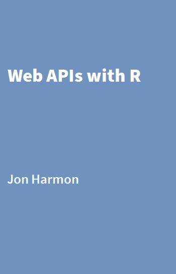

Web APIs with R
Welcome

Last updated: 2024-01-01 17:19:17 CST
This is the website for the work-in-progress book, Web APIs with R. This book will teach you how to work with the web from your R session. This book will be published as part of The R Series from CRC Press.
This book is very much a work in progress.
I’m using a “backwards design” approach, through which I’m creating book club slides for an eventual https://r4ds.io book club. I have completed the first draft of (most of) the slides! Next I plan to present the slides to learners to figure out whether I’m covering the right material to the right depth. Join us at the Data Science Learning Community (find the #book_club-wapir channel) to participate!
I’m not ready for PRs yet (despite what you might see in some of the boilerplate). However, if you have thoughts about what you’d like to see, please submit an issue!

This website is free to use, and is licensed under the Creative Commons Attribution-NonCommercial-ShareAlike 4.0 International License.
The code contained in this book is simultaneously available under the MIT license; this means that you are free to use it in your own packages, as long as you cite the source.
Want to help?
I am writing this book in a GitHub repository. Follow the “Edit this page” or “Report an issue” links in the table of contents if you would like to help!
The Data Science Learning Community
If you would like to discuss the contents of this book (or any other data-related topic), join the Data Science Learning Community Slack.
Code of Conduct
Please note that Web APIs with R is released with a Contributor Code of Conduct. By contributing to this project, you agree to abide by its terms.